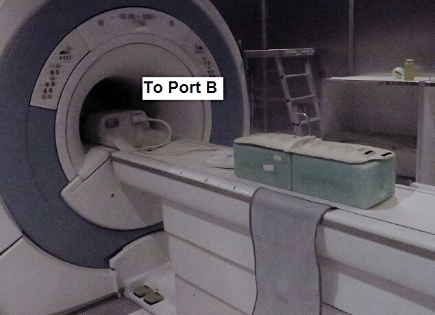
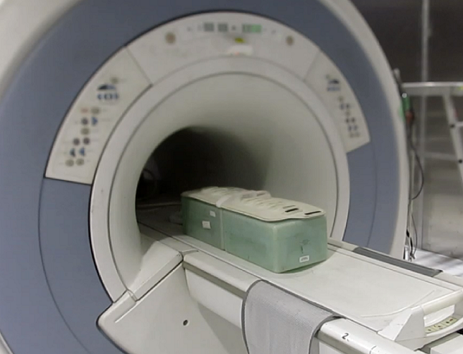
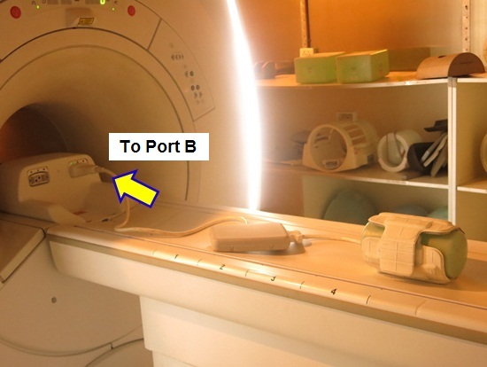
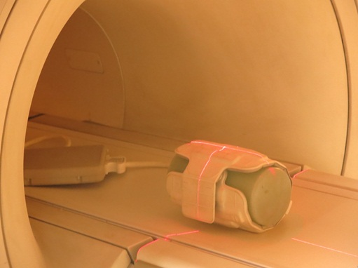

- 00000018WIA30D40030GYZ
- id_131064403.3
- Jan 26, 2025 8:05:24 AM
16CH Flex Coil setup for MCQA
Prerequisites
| Personnel requirements | |||
|---|---|---|---|
| Required persons | Preliminary requirements | Procedure | Finalization |
| 1 | - | 30 minutes | - |
| Tools and test equipment | |||
|---|---|---|---|
| Item | Quantity | Part number | Manufacturer |
| TL Unified Phantom (for 1.5T) | 2 | 5343347 | - |
| Large Cylindrical Unified Phantom (for 1.5T) | 1 | 5342679 | - |
| Required conditions |
|---|
| The following coil configuration names must be installed to run this tool: Check the system coil configuration for 1.5T 16Ch Large Flex Coil and 1.5T 16Ch Medium Flex Coil configuration. If the coils have not been installed, select 1.5T 16Ch Large Flex Coil and 1.5T 16Ch Medium Flex Coil from the list of available coils, and install. |
About this task
Follow this process to prepare for the SNR test using the 1.5T 16Ch Flex coil suite.
| GE Part number | Description |
|---|---|
| 5430000-22 | 1.5T GEM Flex Coil 16-L |
| 5430000-23 | 1.5T GEM Flex Coil 16-M |
| 5430000-24 | 1.5T GEM Flex Coil 16-S |
Large Flex Coil
Procedure
- The Quad Head Coil must be completely removed from the cradle before performing any body or surface coil scans. Failure to do this may result in damage to the Quad Head Coil T/R network.
- Connect 1.5T HD-Connector with Flex coil.
- Set the phantom and 1.5T 16Ch Large Flex coil on the cradle
as following steps.
- Connect the coil to port B. Connecting the coil to port A may result in the test failure;
- Put the coil on velcro tape and align center of the coil and
center of the cradle.Note Place the 1.5T 16Ch Large Flex coil far enough from LPCA so that the coil cable won't be placed under the coil to avoid the low SNR.
- Place the phantom with holder on S-I center of the 1.5T 16Ch
Large Flex Coil.
Figure 1. Setup 
- At the magnet, press “Alignment Light” button to
turn on the light. Move the cradle to align the coil to the alignment
lights. Press “Landmark” button to landmark the alignment.
Figure 2. Landmark 
- Move the coil to scan position by pushing the “Move to Scan” button, ensuring cable does not get snagged.
- Perform MCQA Tool. Refer to Multi-Coil Quality Assurance Tool.
Small / Medium Flex Coil
Procedure
- The Quad Head Coil must be completely removed from the cradle before performing any body or surface coil scans. Failure to do this may result in damage to the Quad Head Coil T/R network.
- Connect 1.5T HD-Connector with Flex coil.
- Set the phantom and 1.5T 16Ch Medium or Small Flex coil on the cradle as following steps.
- Align center of the coil and center of the cradle.Note Place the 1.5T 16Ch Medium or Small Flex coil far enough from LPCA so that the coil cable won't be placed under the coil to avoid the low SNR.
- Place the phantom with holder on S-I center of the 1.5T 16Ch Medium or Small Flex Coil.
Figure 3. Setup 2 
- At the magnet, press “Alignment Light” button to turn on the light. Move the cradle to align the coil to the alignment lights. Press “Landmark” button to landmark the alignment.
Figure 4. Landmark 
- Align center of the coil and center of the cradle.
- Move the coil to scan position by pushing the “Move to Scan” button, ensuring cable does not get snagged.
- Perform MCQA Tool. Refer to Multi-Coil Quality Assurance Tool .